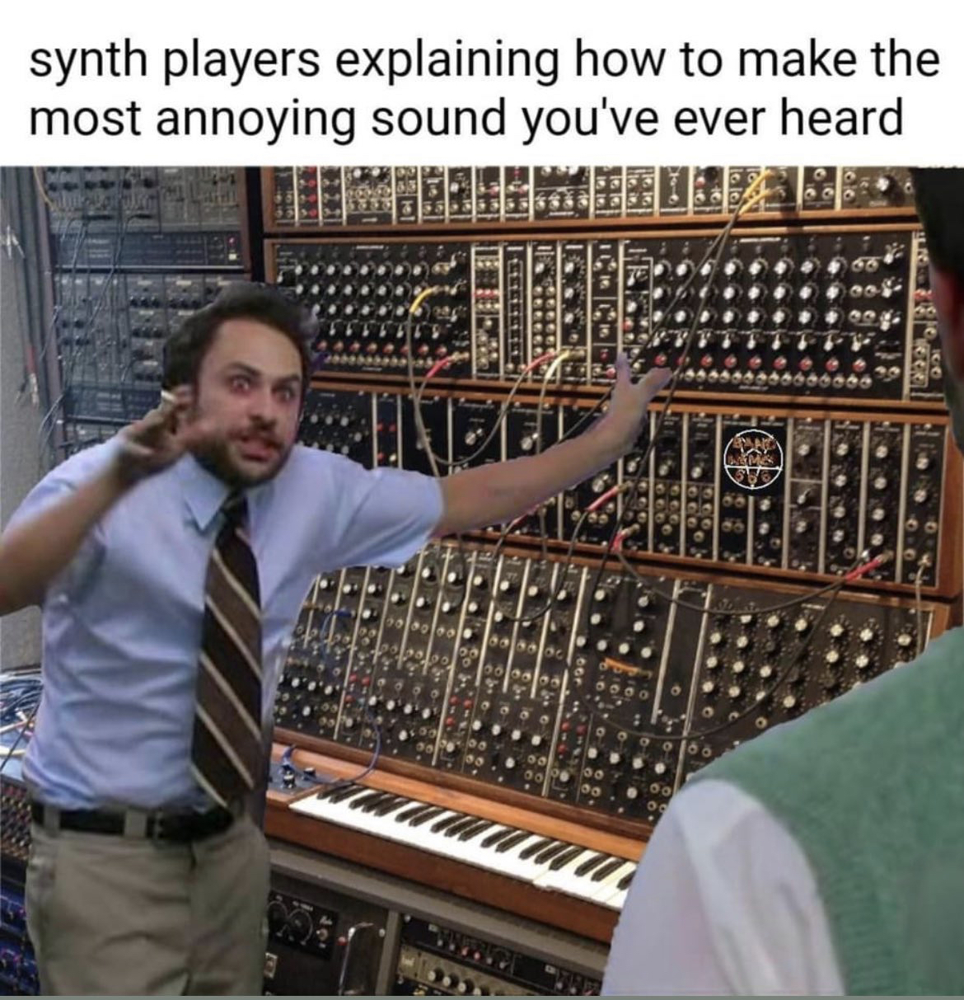

Click to start
Synth Sandbox

start
stop
Random Speed
Random Pitch
Volume
Pitch
Low Pass Filter Cutoff
Amplitude Modulation Frequency
Low Frequency Oscillator (LFO)
Rate
Range
Offset
Rhythm
Choose a rhythmic value
Quarter
Eighth
Eighth Triplet
Sixteenth